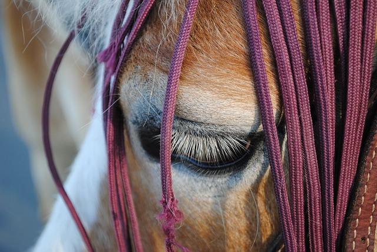

Animal Cruelty Laws
In 2019, Congress passed a law making animal cruelty a federal crime. The Preventing Animal Cruelty and Torture (PACT) Act made it possible for federal law to prosecute people who have abused animals of any kind. Now we must remember that not all abuse is intentional. It can look like neglect and often than not the abuser does not understand that what they are doing is illegal and wrong.
Major Signs Of Abuse Or Neglect
1. Trauma to the body, poor body condition.
2.Lack of food, lack of water, lack of shelter, and lack of sanitation.
3. Signs of being abandoned.
What Can You Do?
If you believe an animal is a victim of animal abuse do the following. Document the abuse, using video or photos. Then call 911, be clear and specific about the abuse, and present evidence.